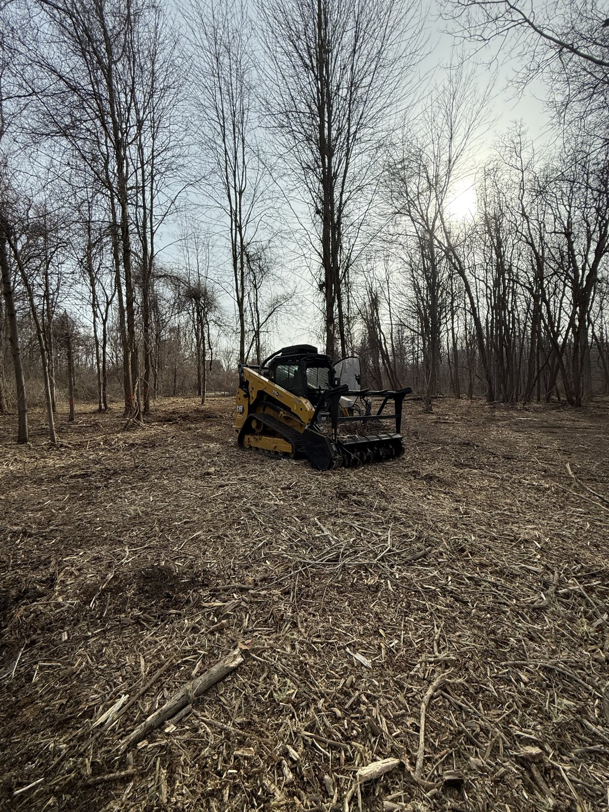

When you call Broadmark, you talk to the person who quotes the job, runs the machine, and walks the finished work with you.

Broadmark is a forestry mulching and land clearing business based in Sumpter Township, Michigan. We run a purpose-built Cat compact track machine with a dedicated forestry mulching head — professional equipment sized for residential and small-acreage work, not a rental with a brush cutter bolted on.
[Add 2–3 personal sentences here: how you got into this work, and a photo of yourself with the machine — faces close local deals.]